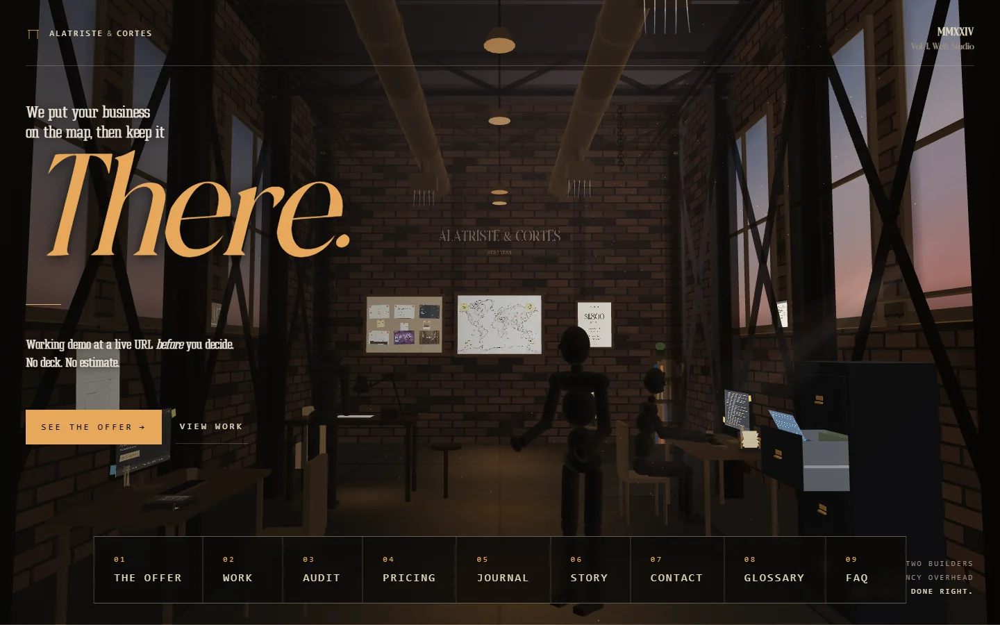

Rebuilding my own studio, as an experience.
A&C Meridian is the studio I run with my cousin Michael Cortes. I tore down the site I'd already shipped and rebuilt it from zero: an immersive three.js studio scene you walk into, built on Astro 4, with the custom admin panel still running underneath. Quiet where it should be, ambitious where it counts.

Project breakdown
The studio's own site can't be the orphan. Twice.
A&C Meridian launched from zero, held to the standard I'd give any client. But a studio that sells custom work can't ship the same site forever. The first version was a clean editorial build. The rebrand to Alatriste & Cortes needed a site that showed what we can do instead of just saying it.
So the project stayed two parts, a public marketing site and the internal admin that powers it, but the marketing site got torn down to the studs and rebuilt as a 3D experience.
A studio you walk into.
The new site opens on a three.js scene: the studio loft, rendered in WebGL. Under the motion it is still editorial. Large serif display, a quiet grid, dark amber on charcoal. The hero is a place now, not a headline.
- One persistent WebGL canvas, mounted once. Click a section and the camera moves to that vantage in the studio loft. You travel through the space instead of paging between flat screens
- The look is hand-written GLSL: roughly 17 custom shaders for brick, iron beams, bronze, wood, light shafts, even the steam off a coffee cup. three.js renders, the materials are mine
- Built on Astro 4. Islands architecture ships zero JavaScript to the content pages; the scene is the one island that loads three.js
- A real mobile fallback. Phones that can't run WebGL cleanly get a CSS version of the same studio, by design
An entire studio operating system, written from scratch.
Most studios log into WordPress and call it done. I wanted a control surface that fit how I actually run the studio: a place to publish, to track prospects, to audit client sites, and to do it all without leaving the brand. The marketing site's editorial type system carries straight into the admin: Fraunces italic display, mono labels, paper background, restrained motion. Logging in feels like the same studio.
Sign in with a magic link. Inside, sixteen admin pages cover every content type on the site (journal, glossary, FAQs, services, tiers, partners, ticker copy) and every operations surface the studio actually uses. A built-in audit pipeline dispatches a managed Puppeteer scan against any prospect or client site and surfaces severity-graded findings inside the same dashboard. Prospects, audit reports, sales briefs, all of it sits on the same Cloudflare stack as the public site.
- Magic-link sign-in. 32-byte random tokens, SHA-256 hashed at rest, single-use, 15-minute expiry
- Three-role permission matrix (Admin · Editor · Viewer), enforced server-side on every CRUD endpoint
- Drag-drop image uploads straight to R2, attributed to the editor on file
- Live markdown preview, auto-slug from title, scheduled publishing on a cron tick
- Dynamic OG image generation per post via workers-og (Satori + resvg)
- Built-in audit pipeline: @cloudflare/puppeteer on a separate Worker, results stored in R2, surfaced as a severity-classified report in the admin
- Prospect CRM with effort estimates and owner attribution (developer / sales / SEO) per finding
- Editorial visual system carried into the internal tool, not just the public site
What I picked, and what I didn't.
-
01
Build the studio's operating system. Don't stitch one together from SaaS.
The admin is a sixteen-page custom CMS with role-based permissions, drag-drop image uploads to R2, scheduled publishing, dynamic OG image generation, a built-in audit pipeline that dispatches managed Puppeteer against client sites, and a prospect CRM with severity-classified findings. Around sixteen thousand lines of admin UI and API, written without a framework.
Considered: Notion + Sanity + a separate uptime SaaS (four bills instead of one), WordPress with plugins, a React admin SPA
-
02
Split runtime. Pages Functions for the CMS, a separate Worker for site audits.
The audit pipeline opens a managed Puppeteer session and renders client sites. Pages Functions cap at 50ms CPU per request and can't bind the BROWSER service. A second Worker handles that workload on a daily cron and shares the same D1 + R2 by account-level binding. Two runtimes, one data layer, each tuned to its actual constraint.
Considered: One Pages Functions deploy doing everything, a third-party uptime/perf SaaS
-
03
Rebuild the marketing site in 3D. Keep the admin boring.
The public site is where a custom studio has to prove it, so it earns a three.js scene and an Astro rebuild. The admin is where I work every day, so it stays fast, framework-free, and unremarkable on purpose. Two surfaces, opposite tools, each matched to its job.
Considered: a flat redesign (cheaper, forgettable), an off-the-shelf 3D template (off-brand), or keeping the first version
Last time, no framework. This time, three.js and Astro. Same rule.
The first site shipped no framework on purpose. A brochure site is a request and
response loop, and fetch() plus the DOM already handle that. Shipping
45KB of React to render static type would have been the wrong tool. That logic
didn't change. The job did.
A 3D studio you can walk into is a different job. It earns a real WebGL renderer, and hand-rolling one just to dodge a dependency would be the same mistake in reverse. So three.js draws the scene, and Astro lets me adopt it surgically. Astro ships zero JavaScript by default, so the only page that pays for three.js is the one that renders it. The content and admin pages stay as light as the first version.
- Adopting three.js did not mean importing the look. The renderer is three.js; the 17 shaders that make it the studio are hand-written GLSL
- Astro islands: the scene is the one hydrated island, everything else ships as static HTML
- The admin still runs framework-free, the same as the first build
- Three runtime dependencies in the whole site:
astro,three, and the sitemap generator
The rule never changed: match the tool to the job. The first job didn't need a framework, so I shipped none. This one needed WebGL, so I reached for three.js and nothing more than that.
The studio's site is the demo now.
A&C's whole pitch is demo first, decide second. A working build before you pay a cent. The studio's own site had to be the proof, and now it is. Prospects land in a 3D studio, run a free audit on their current site, and read published prices before they ever email us.
No developer in the loop on my own studio, no CMS bill, no template fighting the brand. The studio site is no longer the orphan. It is the first piece of work prospects see, and it stands up next to everything else in the portfolio.